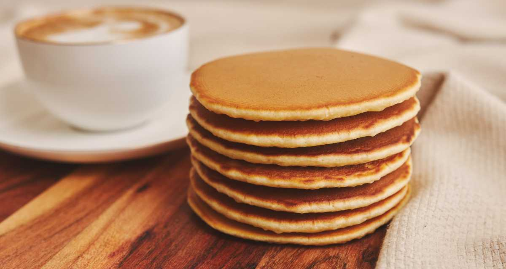

Panqueca
Return

Description
No café da manhã ou no lanche da tarde, com mel, frutas ou doce de
leite: hoje é dia de panqueca doce!
A receita é rápida, feita no liquidificador e tem aquele ingrediente extra que
eu amo e vocês sabem que eu sempre dou um jeito de colocar nos meus preparos:
extrato de baunilha mas é opcional, pode fazer sem que vai ficar uma delícia
também!
Com esse passo a passo bem prático, você vai ver como fazer panqueca
doce é fácil e irá arrasar no seu lanche!
Ingredients
- 1 xícara de chá de farinha de trigo
- 2 colheres de sopa de manteiga derretida
- 1 colher de sopa de fermento em pó
- 1 colher de chá de sal
- 1 xícara de chá de leite
- 2 colheres de sopa de açúcar
- 1 OVO
Preparation
- Bata os ovos levemente, junte o leite e a manteiga e o açúcar
- Adicione a farinha de trigo, o fermento (se a farinha já não conter)
e o sal. Note que vai ficar um pouco espessa, o que é normal para este
tipo de panqueca.
- Modele as panquecas em uma frigideira antiaderente untada com manteiga.
- Sirva com mel, geleia, frutas ou iogurte.